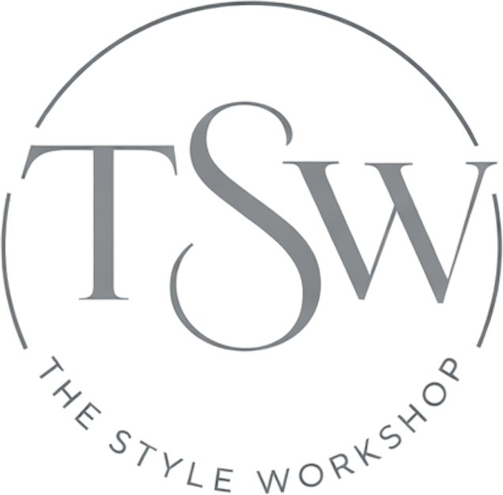

Defiance Gallery
Paddington, NSW. Contemporary painting, sculpture and mixed media from established and emerging artists.

Below are some galleries and artists I follow that may have pieces to suit your home. Art is very subjective, so not everything will be to your taste, but they each cover a broad range of art and exhibitions, so it's worth subscribing to see what comes up in future.
01 · Galleries
A mix of Sydney and regional galleries, each with a changing exhibition program.
Defiance Gallery
Paddington, NSW. Contemporary painting, sculpture and mixed media from established and emerging artists.
Art2Muse Gallery
A broad online and in-gallery collection spanning around 50 established Australian artists.
Arthouse Gallery
Rushcutters Bay, NSW. Emerging and established Australian and First Nations artists.
Walcha Gallery of Art
Walcha, NSW. A regional gallery with a rotating contemporary program.
Michael Reid
Sydney, Berlin and regional NSW. Contemporary Australian art with a strength in photography and First Nations artists.
The Toowoomba Gallery
Toowoomba, QLD. A privately owned regional gallery focused on emerging and mid-career Australian artists.
Paper Pear
Wagga Wagga, NSW. Paintings, ceramics and artisan pieces from more than forty Australian artists.
Project Gallery
Woollahra, NSW. Curated fine art exhibitions from local emerging artists.
AK Bellinger Gallery
Inverell, NSW. Established and emerging Australian artists, with a national and international program.
02 · Individual Artists
Artists I follow directly, worth subscribing to for new releases.
Jane Canfield
Oil, acrylic and gouache paintings of the Australian landscape.
Paula Jenkins
Large-scale oil paintings and works on paper.
Ashlea van Riet
Abstract paintings inspired by the Australian landscape.
Julz Beresford
Plein air landscape painting, worked up from the Hawkesbury River and the Snowy Mountains.
Ingrid Daniell
Paintings and recent works, exhibited under her own name.
Suzie Riley
Original paintings, viewable through her artist website.
Anna Fitzpatrick
Contemporary Australian painter.
Debbie Mackenzie
Landscape paintings built around a sense of place, expansive skies and open land.
John Lloyd
Oil on canvas and acrylic on board landscapes, from small studies to large-scale works.
Trish Crampton
Calm, monochromatic still life studies of everyday vessels, in the spirit of Morandi.
Small Stills
Affordable still life and seascape pieces from the Hawkesbury River.